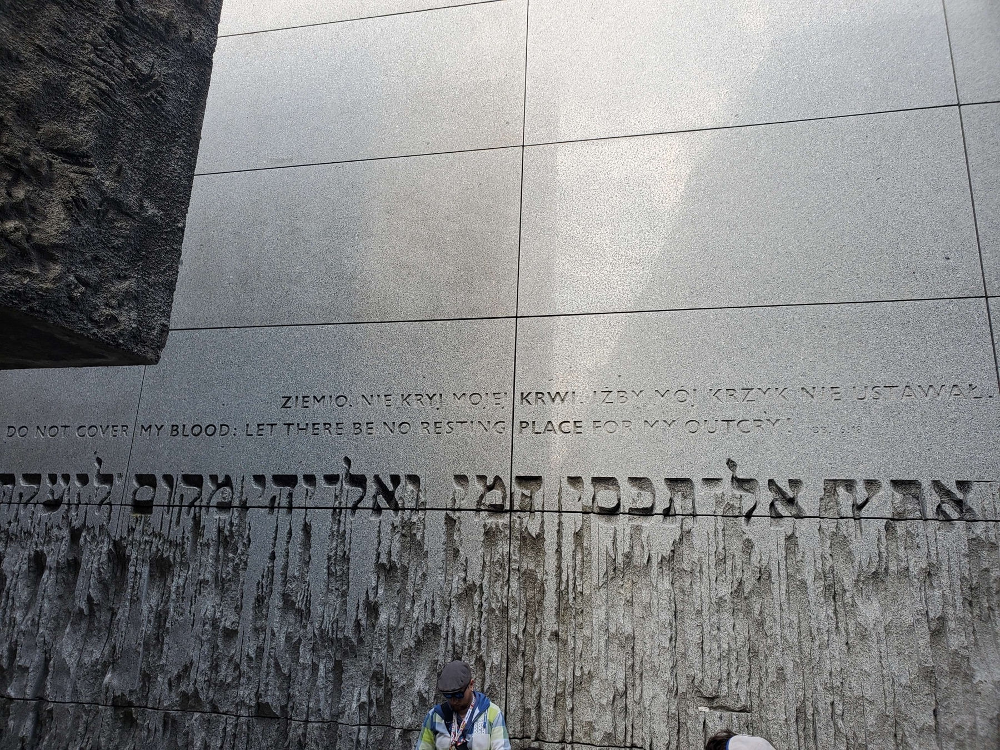
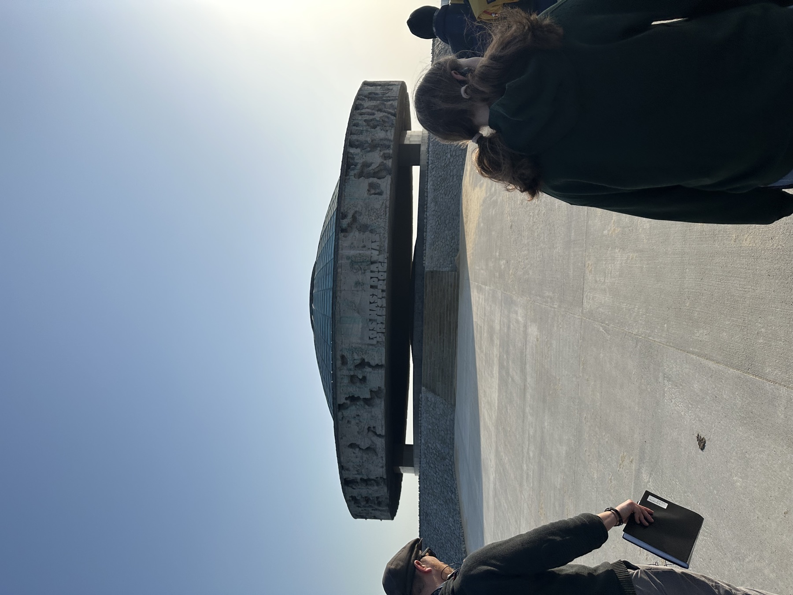
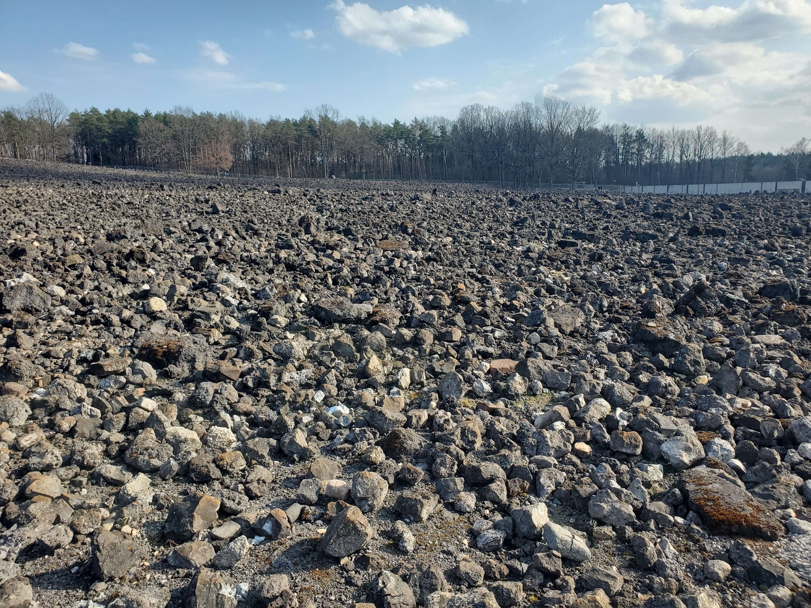
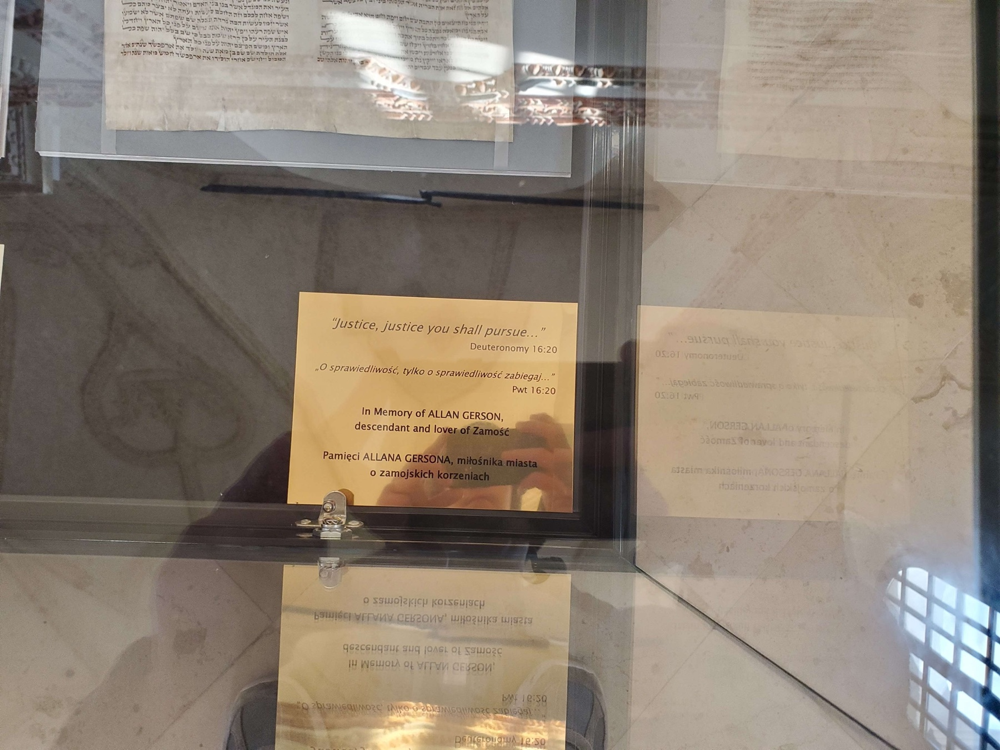

Still Here began with a simple idea: visiting Holocaust sites carries a responsibility. When we learn this history in the places where it happened, we cannot treat it like something distant or finished. Remembering the Holocaust means paying attention to the choices people made then and the choices we make now.

Combat Indifference
One of the biggest lessons from the Holocaust is that terrible things often grow when people stay silent. Neighbors, governments, institutions, and everyday citizens looked away while Jewish people and other targeted groups were being dehumanized and isolated.
Our group came away with the belief that indifference is dangerous. Staying silent when people are being treated unfairly is not harmless. Because of that, we feel a responsibility to speak out when we see prejudice, discrimination, or dehumanization, even when it is uncomfortable or does not affect us personally.


Recognize the Warning Signs
During our trip, we learned how Nazi Germany used propaganda, fear, scapegoating, and the steady removal of rights to create a system that made genocide possible. None of it happened overnight. It developed step by step, while many people failed to respond.
That is why part of our cause is learning to recognize similar warning signs in the present: the blaming of minority groups, the spread of misinformation, the normalization of hateful language, and the weakening of democratic institutions. History should push us to pay attention, especially when cruelty starts to feel normal.
Preserve Memory
As Holocaust survivors grow older, the responsibility of remembrance is being passed to the next generation. Soon, there will be no living eyewitnesses left to tell these stories firsthand.
Because of that, we believe it is our job to help preserve their memory. That means continuing Holocaust education, sharing what we learned, and making sure the victims are remembered as people, not just numbers. Every person who was murdered had a life, a family, and a future that was taken from them.

Take Civic Responsibility Seriously
The Holocaust was made possible by hatred, but also by the failure of people and institutions to act with courage. This trip changed the way we think about civic responsibility. Voting and staying informed matter, but so do speaking up, holding leaders accountable, and standing with people who are vulnerable or marginalized.
Our generation will help shape the future, and this experience reminded us that ordinary choices can have real consequences.